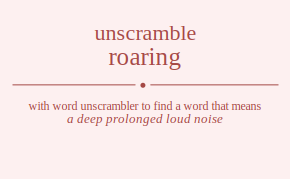

The word found after unscrambling roaring means that a deep prolonged loud noise, a very loud utterance (like the sound of an animal), make a loud noise, as of wind, water, or vehicles, utter words loudly and forcefully, emit long loud cries, act or proceed in a riotous, turbulent, or disorderly way, make a loud noise, as of animal, laugh unrestrainedly and heartily, very lively and profitable, extremely, .
